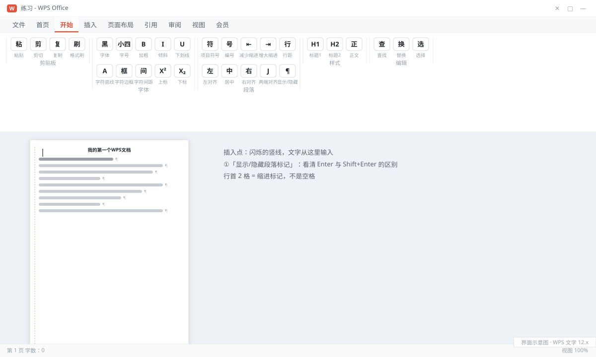
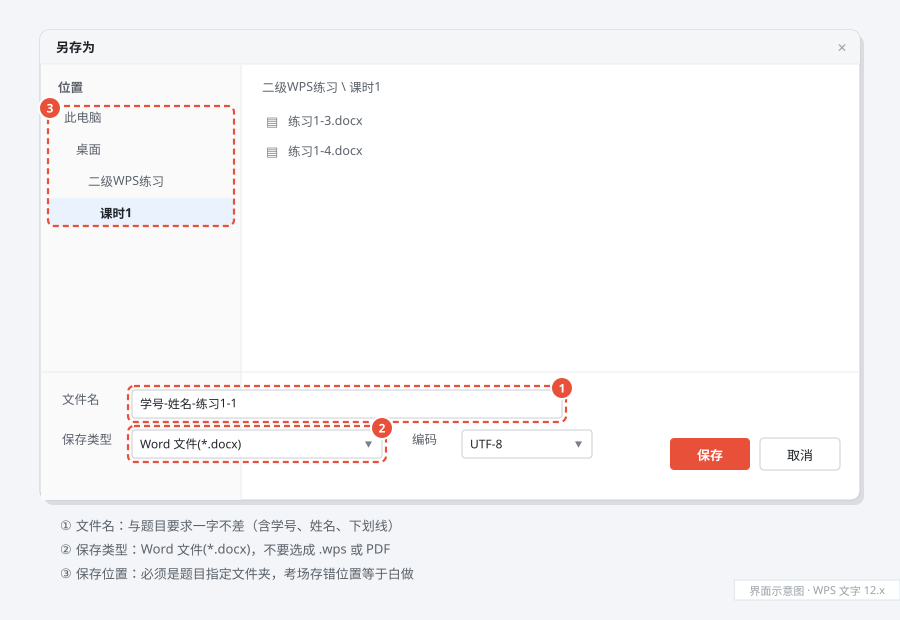
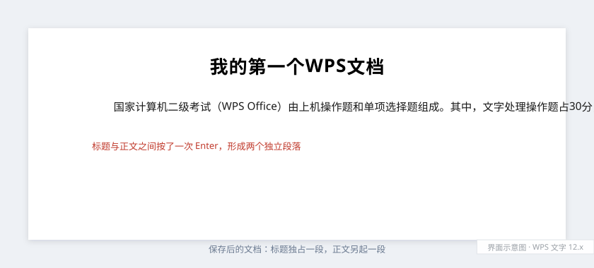

从零新建并保存第一个文档
新建 · 输入 · 保存 8 分钟题目要求
- 在桌面新建文件夹
二级WPS练习，并在其中新建子文件夹课时1。 - 启动 WPS Office，新建一个空白文字文档。
- 按素材录入标题与正文，标题与正文之间按一次 Enter 分段。
- 以文件名
学号-姓名-练习1-1.docx保存到课时1文件夹。
录入素材（全部照打，标点用中文全角）
我的第一个WPS文档 国家计算机二级考试（WPS Office）由上机操作题和单项选择题组成。其中，文字处理操作题占30分，是本课程训练的重点。今天我们从新建文档开始。
解题步骤（考场照这个顺序点）
- 建文件夹。回到桌面，空白处右键 →「新建」→「文件夹」，输入
二级WPS练习后按 Enter；双击进入，再右键新建一个课时1文件夹。（考场同理：先在指定位置把文件夹建好，后面所有保存都往这里存。） - 启动并新建。双击桌面 WPS Office 图标 → 首页点「新建」→ 选「文字」→「空白文档」；若已有文档窗口打开，直接按 Ctrl+N。
- 确认插入点。新页面左上角有一条闪烁竖线，就是插入点。切换输入法到中文（Ctrl+空格 或 Shift），确认任务栏输入法图标显示"中"。
- 输入标题。打「我的第一个WPS文档」，注意
WPS三个字母要在英文状态下输入（按 Shift 临时切换），字母之间不要加空格。 - 分段。按一次 Enter，屏幕上出现一个 ¶ 段落标记，光标跳到下一段行首。然后输入正文，句末用中文句号「。」，括号用全角「（）」。
- 保存（关键一步）。按 Ctrl+S，首次保存会弹出「另存为」对话框 →
- 左侧选「桌面」→ 双击
二级WPS练习→ 双击课时1； - 「文件名」输入
学号-姓名-练习1-1（不要自己再打 .docx）； - 「文件类型」选 Word 文件(*.docx) → 点「保存」。
- 左侧选「桌面」→ 双击
- 验证。看窗口标题栏是否变成
学号-姓名-练习1-1.docx，标题栏没有"*"或"未保存"字样即成功。再打开文件夹确认文件真的在里面。
关键操作截图（点击图片可放大查看）


学号-姓名-练习1-1，保存类型选 Word 文件(*.docx)，左侧位置定位到二级WPS练习 \ 课时1。" loading="lazy">学号-姓名-练习1-1，保存类型选 Word 文件(*.docx)，左侧位置定位到 二级WPS练习 \ 课时1。采分点文件名与扩展名完全一致 · 保存位置正确 · 标题与正文是两个独立段落（用 Enter，不是空格顶下来） · 中文全角标点
易错提醒
- 直接点右上角关闭再选「保存」，文件常落到「我的文档」——考试中存错位置等于白做。
- 文件名打成
练习1-1.docx.docx：类型已带扩展名，文件名里不用再写。 - 用 Shift+Enter 换行：看起来换行了，但标题和正文仍在同一段，后面设"段后间距"会失效。
考场加速键
改文件名或换保存位置，一律用 F12（另存为），比在「文件」里翻菜单快；Ctrl+S 只覆盖保存，不会问你存哪里。
完成效果
